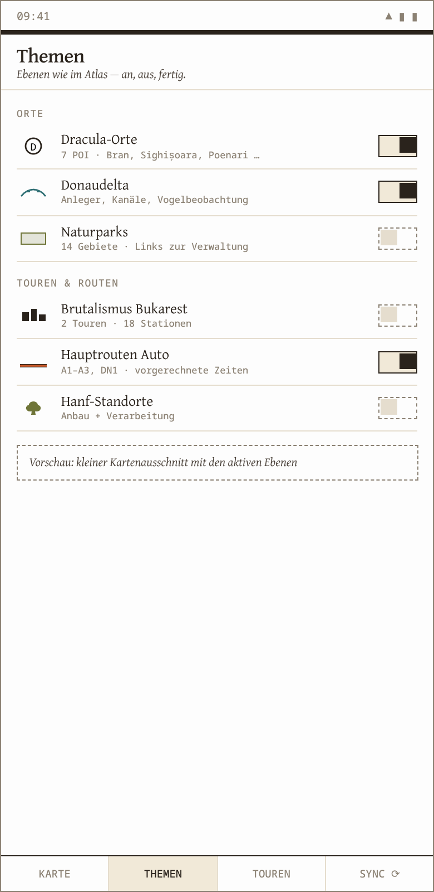

Wir bauen keine App. Wir geben der Reise ihre Karte zurück.
Ein Atlas nach Diercke-Vorbild, ein Fahrplan aus offenen GTFS-Daten, beides in einem GeoPackage — gelesen von QField, einer freien Feld-App aus der Vermessungswelt. Die Karte ist der Reiseplaner.
03 / 16
Die Demo
Zwei Screens. Mehr braucht eine Reise nicht.
PLANEN — THEMEN, TOUREN, BAHNLINIEN

THEMEN — EBENEN WIE IM ATLAS, AN UND AUS
Was Sie sehen, sind Wireframes. Eine Live-Demo gibt es nicht — die App ist ein QGIS-Projekt, und das läuft heute schon.
Wir haben zuerst die Kartografie gebaut und zuletzt die Oberfläche. Bei den meisten Apps ist es umgekehrt, und man sieht es ihnen an.
04 / 16
Der Markt
Das Schienennetz ist da. Es wartet nur auf Karten.
19 629
KM SCHIENE IN RUMÄNIEN
Nr. 7
DER GRÖSSTEN NETZE EUROPAS
1 700+
BAHNHÖFE UND HALTEPUNKTE
90 Mio.
FAHRGÄSTE/JAHR ALLEIN IN TIMIȘOARA
Dazu ein Trend, den niemand bestellen musste: Bahnreisen nach Osteuropa sind das, was Interrail-Kinder machen, wenn sie erwachsen werden.
Quellen: CNCF CFR SA (Netz, Stand 2026) · STPT (Fahrgäste 2024)05 / 16
Die Pilotregion
Das Banat: wo Rumäniens Eisenbahn geboren wurde
1854
Die älteste Bahnstrecke des Landes: Oravița–Baziaș, gebaut für Kohle, gelegen im Banat. Geschichte fährt hier mit.
1869
Timișoara fährt Tram seit der Pferdebahn — heute betreibt die STPT 9 Linien, dazu O-Bus, Stadtbus und ein Wasserbus auf der Bega.
20 s
Seit 2024 liefert die Stadt GTFS-Open-Data im 20-Sekunden-Takt. Der Fahrplan liegt frei auf der Straße. Man muss ihn nur aufheben.
Bevor Sie lachen: sehen Sie sich an, was dieser eine Nutzer schon gebaut hat.
✓
Sechs Atlasblätter Rumänien & Brandenburg, D3-gerendert, druckreif
✓
Signaturenkatalog nach Diercke-Vorbild, ein Farbsystem, eine Quelle
✓
QGIS-Kartensatz mit Symbolbibliothek, Layerstilen und Paletten
✓
Eigene QFieldCloud-Instanz — Verteilung kostet keinen Dienstleister
07 / 16
Das Geschäftsmodell
Drei Erlösquellen, ein Bestand
Der gedruckte Atlas
Reiseatlas Banat als Buch — Print on Demand, keine Lagerkosten. Karten altern langsamer als Apps.
Touren-Pakete
Kuratierte Reisen als GeoPackage: Bahnroute, Etappen, Orte, Geschichten. Einmal kaufen, offline mitnehmen.
Beratung & Workshops
GIS-Handwerk für Verlage, Tourismusverbände, Regionalbahnen. Das Geschäft, das es heute schon gibt.
Ehrlicherweise: Umsatz bisher 0 €. Andererseits: Lizenz- und Serverkosten ebenfalls 0 €. Die Marge stimmt schon mal.
08 / 16
Der Wettbewerb
Alle haben den Fahrplan. Niemand hat die Karte.
FAHRPLAN-APPSKARTEN-APPSWIR
{{ w.k }}{{ w.a }}{{ w.b }}{{ w.c }}
09 / 16
Die Technik
Der ganze Stack ist frei. Und das Diagramm kommutiert.
Rohdaten
OSM · GTFS
GeoPackage
eine Datei
Atlas
A4 · Papier
QField
Hosentasche
Ob Sie erst drucken und dann reisen oder erst packen und unterwegs drucken lassen — Sie kommen bei derselben Karte an. Ein Bestand, zwei Wege, kein Widerspruch.
Alles darunter ist frei: OSM, GTFS, QGIS, QField, die eigene QFieldCloud. Kein App-Store-Gatekeeper, kein Vendor-Lock-in — das Plattformrisiko trägt die Open-Source-Gemeinde, und die ist zäher als wir alle.
10 / 16
Das Team
Ein Gründer. Dafür mit Beweisführung.
Jan Paki — Diplom in theoretischer Physik (Deformationsquantisierung, Stetigkeit von Sternprodukten), zwanzig Jahre Web-Entwicklung, heute Hanf- und Naturschutz-Berater in der Prignitz.
Kartografie, Datenpipeline, Beratung: alles eine Person. Das ist ein Risiko, ja. Es ist auch der Grund, warum das Produkt aus einem Guss ist.
„Meine Diplomarbeit handelte davon, wann ein Produkt stetig ist. Diese Frage stellt sich bei Software öfter, als man denkt.“
11 / 16
Zum Namen, kurz
Eine Multiplikation, die sich verbiegen lässt
DAS PRODUKT
\( f \star g \;=\; f\cdot g \;+\; \lambda\,C_1(f,g) \;+\; \lambda^2 C_2(f,g) \;+\;\dots \)
\( C_1(f,g)-C_1(g,f) \;=\; i\{f,g\} \)
Dreht man λ auf null, bleibt das gewöhnliche Produkt übrig — die klassische Welt. Dreht man auf, ist f ⋆ g nicht mehr g ⋆ f, und die erste Ordnung der Abweichung ist die Poisson-Klammer der Mechanik.
Die spröde Schönheit daran: der klassische Grenzfall ist nicht angeflanscht, er ist eingebaut — er steht als nullter Term da.
Und der Hilbertraum? Kommt zum Schluss. Aus der Algebra und einem Zustand baut die GNS-Konstruktion ihn hervor: Ergebnis, nicht Voraussetzung.
Die offene Frage war: Wann bleibt so ein Produkt stetig?
Formal ist die Reihe elegant — nur einsetzen kann man nichts, weil Konvergenz ungeklärt bleibt. Meine Diplomarbeit fragte, unter welchen Bedingungen sie stetig ist und sich zu einer C*-Algebra schließen lässt. Eine geschlossene Theorie gibt es bis heute nicht.
Das ist keine Anekdote fürs Lebenslauf-Fach. Es ist die Denkgewohnheit, mit der hier gearbeitet wird: erst die Struktur, dann die Oberfläche. Ein Kartensystem, das nur bei gutem Wetter stimmt, ist genauso wertlos wie eine Reihe, die nicht konvergiert.
Ein Atlas ist auch nur eine Abbildung, die stetig sein sollte.
13 / 16
Das Angebot
137 000 €
FÜR
13,7 %
DER ANTEILE
Die Bewertung folgt der Feinstrukturkonstante — eine Zahl, die sich seit dem Urknall nicht bewegt hat. Stabiler wird eine Unternehmensbewertung in dieser Show nicht.
Verwendung: ein Jahr Kartenarbeit Banat, GTFS-Pipeline für ganz Rumänien, Druck der ersten Auflage.
14 / 16
Warum Sie
Für jeden Löwen ein Grund
{{ l.name }}{{ l.grund }}
15 / 16
Wer bietet?
Der Zug nach Timișoara fährt so oder so. Die Frage ist nur, mit wessen Karte.
jan \(\mathbin{\star_{\scriptscriptstyle\mathrm{\hbar}}}\) sternprodukt.de · 0157 8867 2952